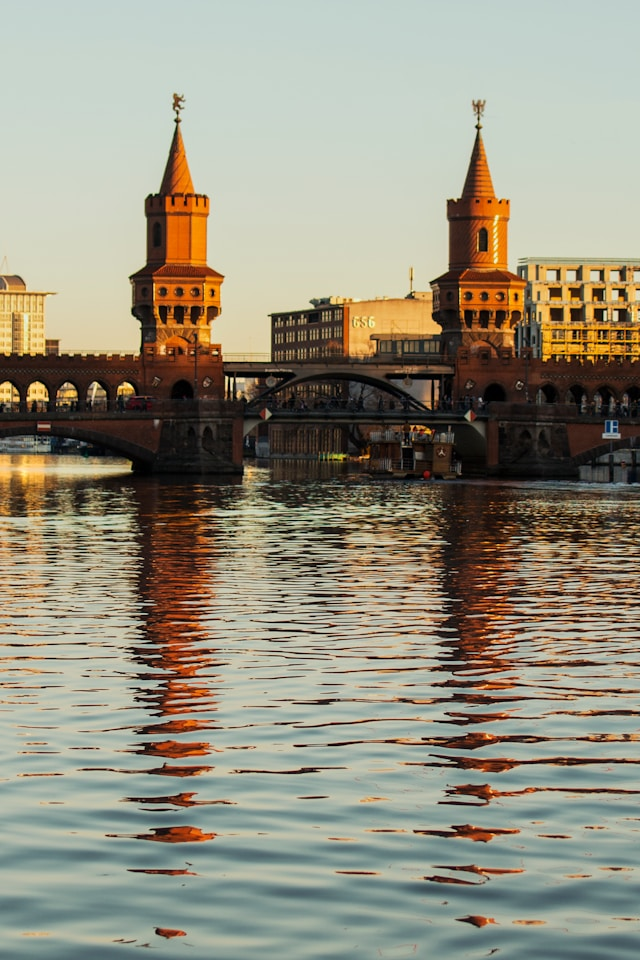
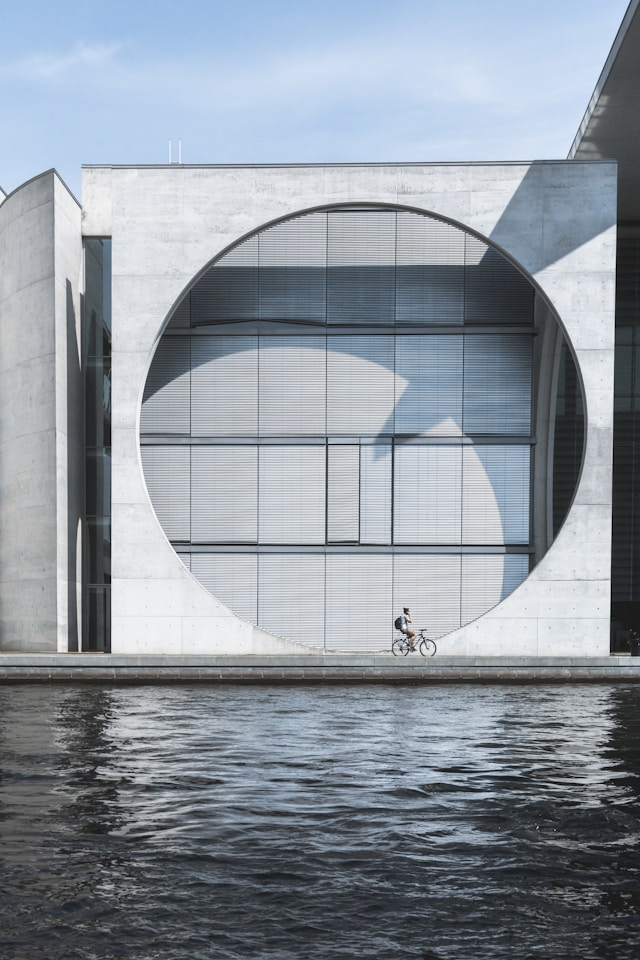
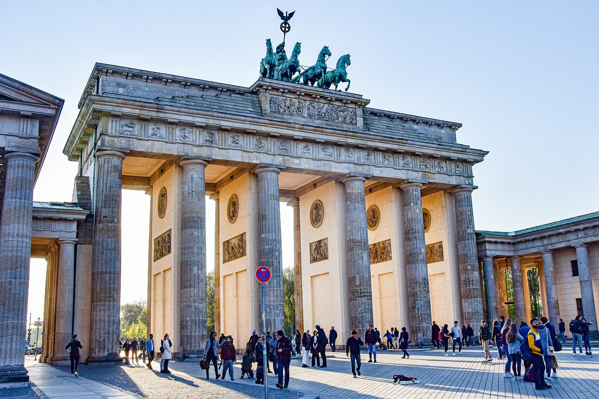
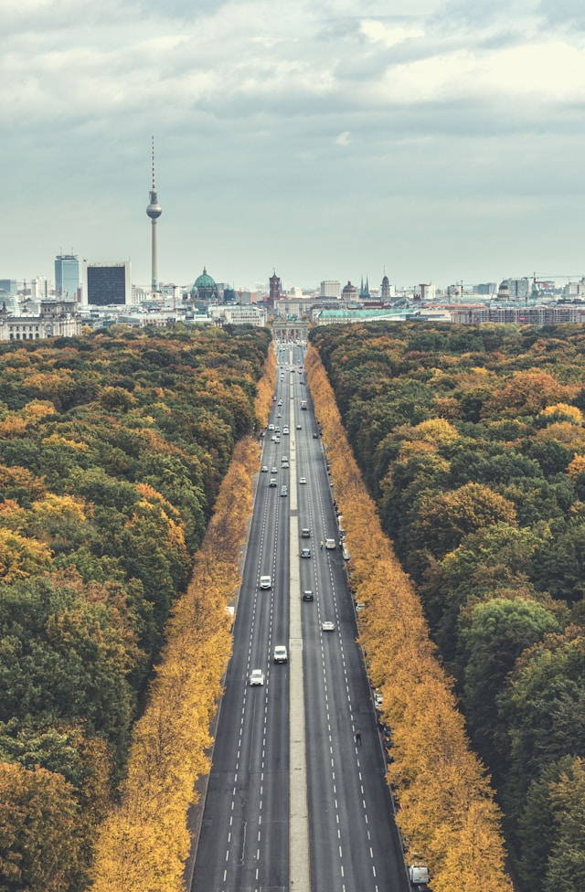
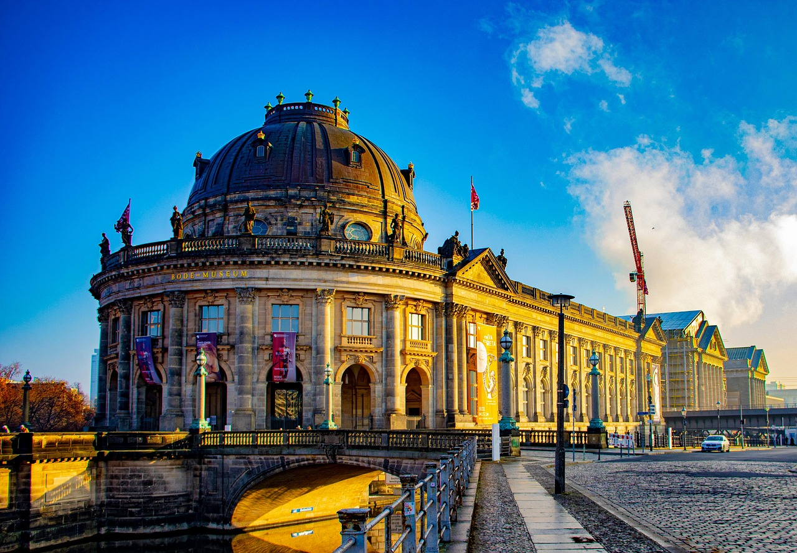
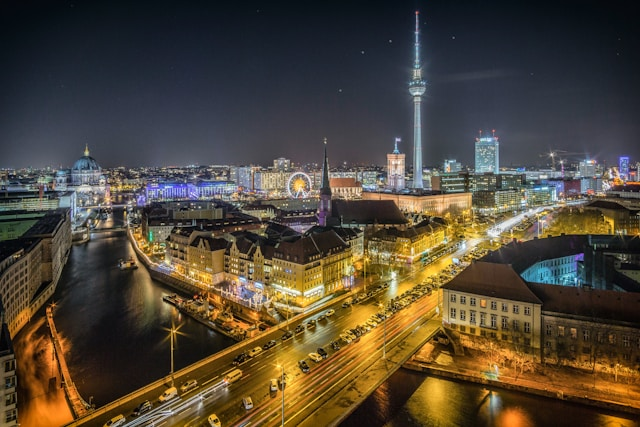
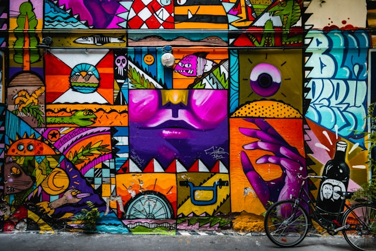
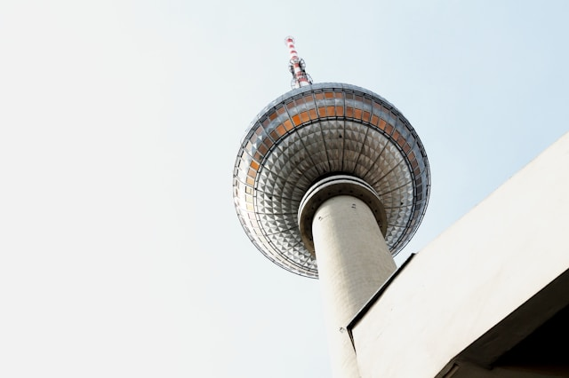

Berlin, the capital of Germany, is a vibrant and historically rich city known for its dynamic culture, diverse architecture, and thriving arts scene. From the iconic Brandenburg Gate and remnants of the Berlin Wall to modern glass skyscrapers, the city blends history with innovation. Its districts, like Mitte and Kreuzberg, offer everything from world-class museums and historical landmarks to trendy cafés and underground music scenes.
Despite its historical significance, Berlin is also a global hub for startups, technology, and creativity. The city's affordability (compared to other European capitals) and open-minded atmosphere attract artists, entrepreneurs, and professionals from around the world. Green spaces like Tempelhofer Feld and Tiergarten provide a balance to the city's fast-paced energy, making Berlin a unique and constantly evolving place to live and visit.








